<footer class="footer">
    <div class="footer-icon">
        <!-- Aquí va el icono central (reloj o flecha hacia abajo) -->
        
    </div>
    <div class="footer-info">
        <p>Lunes a Viernes: 8:00 a.m. - 8:00 p.m.</p>
        <p>Sábados y Domingos: 09:00 a.m. - 10:00 p.m.</p>
        <p>Dias Festivos: Solo Con Citas</p>
    </div>
    <div class="footer-social">
        <!-- Iconos de redes sociales -->
        <a (click)="instagram()"></a>
        <a (click)="goToWhatsApp()"></a>
        <a (click)="facebook()"></a>
    </div>
    <div class="footer-copyright">
        <p>©2024 Capitán BarberShop</p>
    </div>
</footer>
